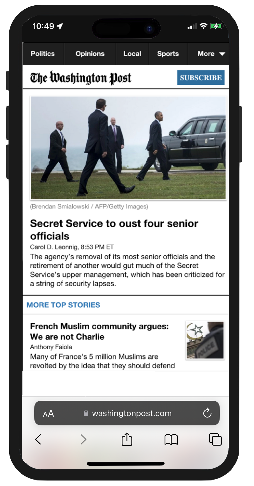
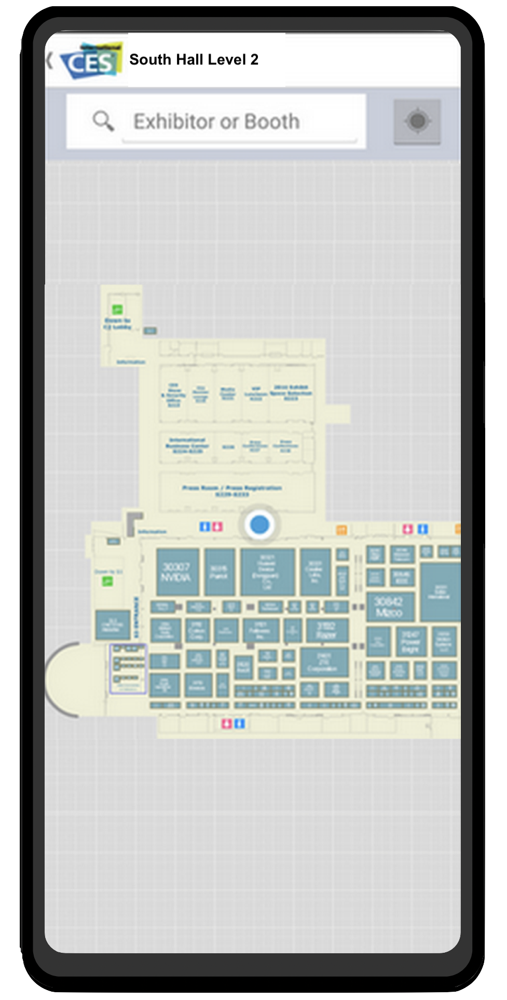
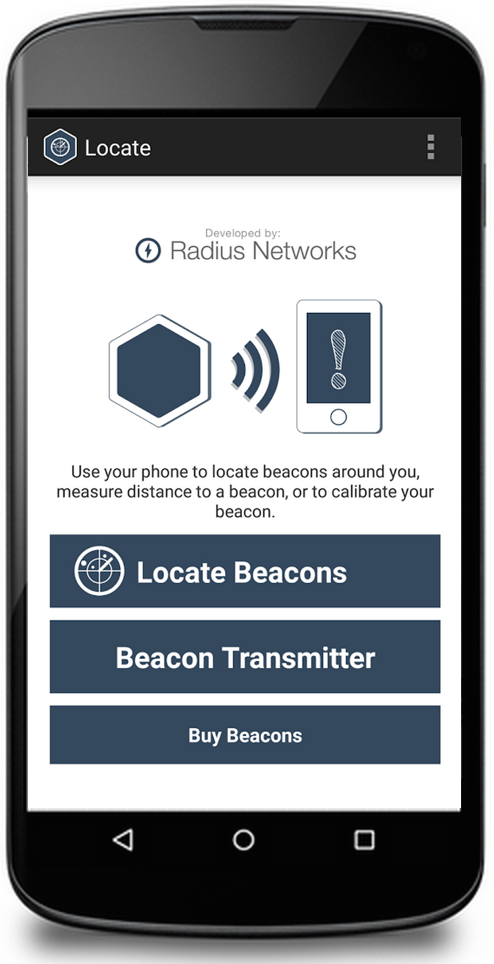
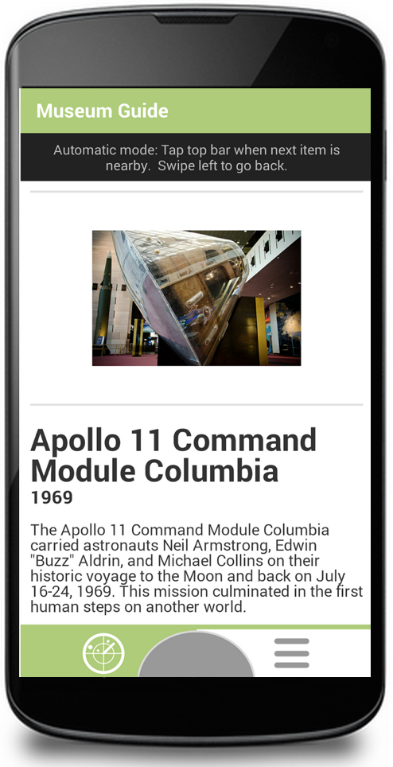
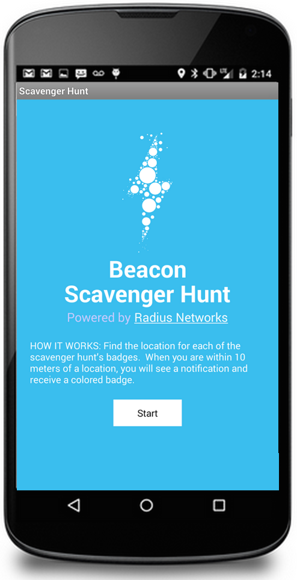
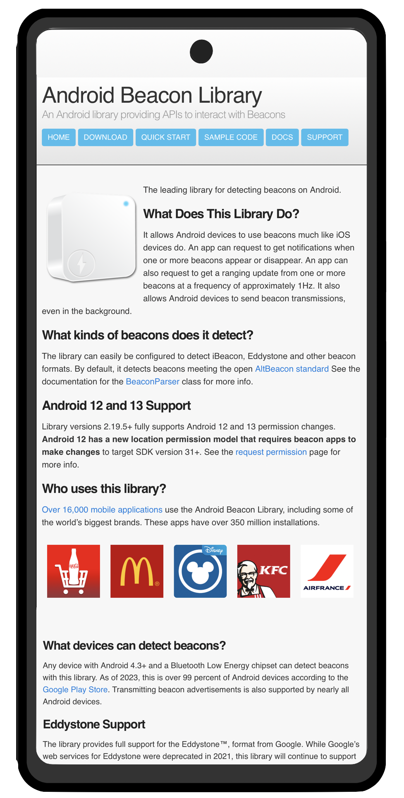

David is available for contract software development work for clients worldwide. He has a strong track record of delivering projects on time and under budget. His strong interpersonal skills allow for easy interaction with customers and end-users, and his high-energy temperament and entrepreneurial orientation allow him to independently complete projects on schedule. References available on request.
Specialties
- iBeacon expertise
- iOS and Android app development
- HTML 5 app development
- Web service development with Ruby and Java
- Bluetooth Low Energy applications
- News and media applications
Sample Commercial Projects:
|

HTML 5 mobile web app • Offline reading w/ LocalStorage • Responsive HTML5/Javascript and jQuery frontend • Java Spring MVC backend w/ REST web services • Backend bundling and caching services for iPhone native app |

Consumer Electronics Show Mobile Maps Official indoor nav app for the Consumer Electronics Show • iOS and Android • Responsive HTML5/Javascript and jQuery config web app • Ruby on Rails 4 / Postgres backend |
|

Beacon location and transmission tool • iOS and Android |

National Air and Space Museum (Private) Demonstration museum guide app • iOS and Android |
Open Source Projects:
|

Beacon Scavenger Hunt iOS and Android |

Open Source library for bluetooth beacons |
Testimonials:
"I enthusiastically recommend David Young for development work. David is an incredibly skilled developer, adept at both frontend and backend work in addition to overall architecture. David is at his best when presented with a problem to solve. He'll suggest several technical solutions and recommend the best one for either my budget, time or desired effect. He hits all deadlines and communicates clearly around when his work will be complete and what we owe him for his labor. He’s been an excellent resource for our team."
-- Julia Beiser, Director of Mobile Projects, The Washington Post
"David is a true professional and he's a world leader (the authority!) in his area of expertise. The way he handled communication and documentation was first class. I have no hesitation when recommending him."
-- James Docherty, Co-Founder, Orchard VIE Ltd
Contact: tech@davidgyoung.com